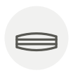

Skirt steak
Hampe
| Latin name | Bœuf — diaphragme |
|---|---|
| Family | Cuts of meat |
| Origin | France |
| Season | All year |
| Flavour | Meaty · Rich · Umami · Earthy |
| Typical price | 18–28 €/kg |
What it is
Part of the diaphragm, and one of the morceaux du boucher — the cuts French butchers traditionally kept for themselves because there are only two per animal and they taste better than they look. Onglet is its neighbour.
In the kitchen
The grain is coarse and runs lengthways. Slice it hard across the grain or it is unchewable, however rare you cook it.
Goes with
Shallot Red wine vinegar Black pepper Butter Garlic Thyme Mustard Parsley
Something wrong here, or missing? Tell us